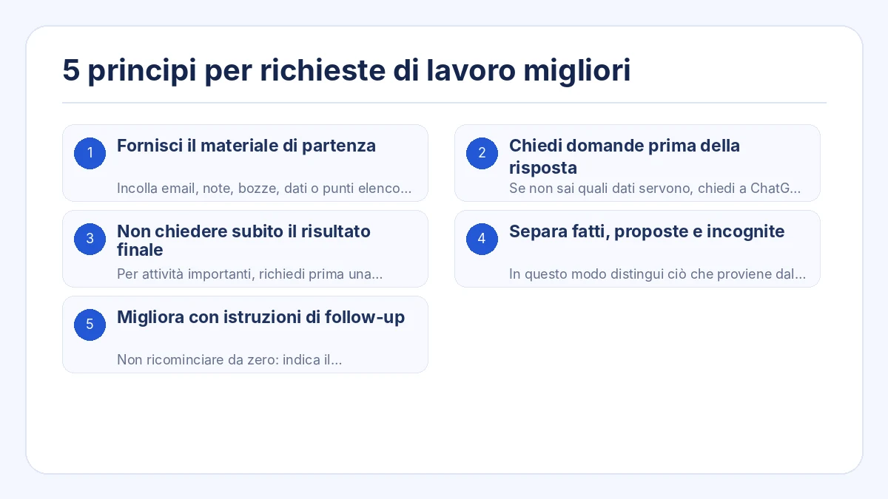
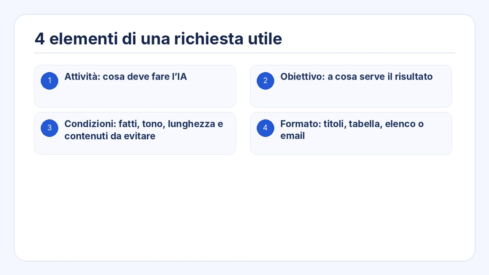
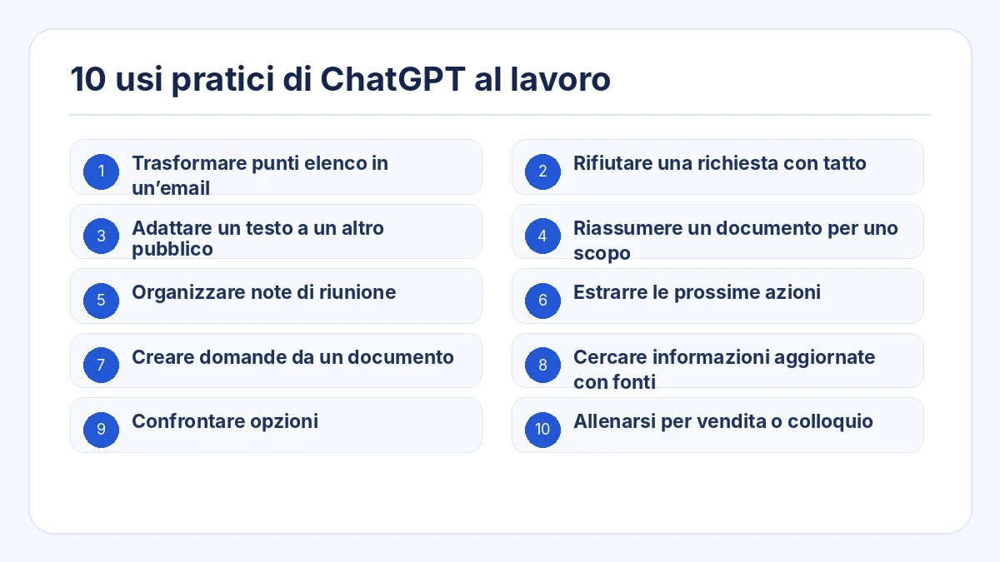
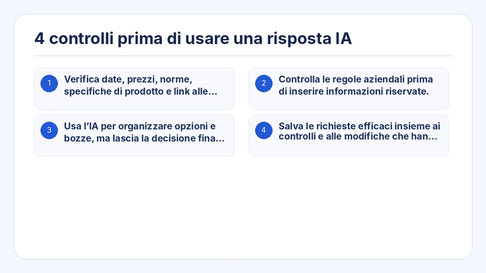

Questa guida mostra un modo pratico di usare ChatGPT nel lavoro. L’obiettivo non è memorizzare un prompt magico, ma fornire contesto, condizioni e formato di output adatti all’attività.
Puoi copiare l’esempio, sostituire i dati tra parentesi quadre e controllare il risultato prima di usarlo in una situazione reale.
Punti chiave
- Fornire il materiale di partenza invece di chiedere all’IA di inventare tutto da zero.
- Chiedere domande di chiarimento quando mancano informazioni.
- Dividere le attività complesse in pianificazione, verifica e stesura.
- Separare fatti, proposte e punti non confermati quando serve precisione.
- Rivedere la prima risposta e migliorarla con istruzioni mirate.

1. Fornisci il materiale di partenza
Incolla email, note, bozze, dati o punti elenco su cui la risposta deve basarsi. Specifica che non devono essere aggiunti fatti assenti.
2. Chiedi domande prima della risposta
Se non sai quali dati servono, chiedi a ChatGPT di individuare le informazioni mancanti e di fare al massimo tre domande prima di rispondere.
3. Non chiedere subito il risultato finale
Per attività importanti, richiedi prima una struttura o l’elenco dei contenuti. Conferma la direzione e poi chiedi il testo finale.
4. Separa fatti, proposte e incognite
In questo modo distingui ciò che proviene dalla fonte, ciò che suggerisce l’IA e ciò che deve ancora essere verificato.
5. Migliora con istruzioni di follow-up
Non ricominciare da zero: indica il cambiamento preciso, per esempio ridurre la lunghezza, usare un tono più calmo o rimuovere affermazioni non supportate.
4 elementi di una richiesta utile
Sostituisci le parti tra parentesi quadre con la tua situazione. Chiedi all’IA di non inventare informazioni mancanti e di separare i punti da verificare.
- Attività: cosa deve fare l’IA
- Obiettivo: a cosa serve il risultato
- Condizioni: fatti, tono, lunghezza e contenuti da evitare
- Formato: titoli, tabella, elenco o email

## Attività
Crea una risposta al messaggio del cliente riportato sotto.
## Obiettivo
Riconoscere il problema, spiegare ciò che è confermato e rendere chiaro il passo successivo.
## Materiale di partenza
[Incolla il messaggio e i fatti interni confermati]
## Condizioni
- Non promettere un tempo di ripristino non confermato.
- Separare i fatti confermati dai punti ancora in verifica.
- Usare un tono professionale e calmo.
- Non aggiungere informazioni assenti dal materiale.
## Formato
1. Oggetto
2. Corpo dell’email
3. Punti da confermare prima dell’invio10 usi pratici di ChatGPT al lavoro

1. Trasformare punti elenco in un’email
Indica destinatario, obiettivo, contenuti, scadenza e tono.
2. Rifiutare una richiesta con tatto
Spiega cosa non è possibile, il motivo comunicabile e un’alternativa realistica.
3. Adattare un testo a un altro pubblico
Mantieni i fatti e cambia la spiegazione per cliente, dirigente o principiante.
4. Riassumere un documento per uno scopo
Definisci chi leggerà e quale decisione deve prendere.
5. Organizzare note di riunione
Estrai decisioni, attività, responsabili, scadenze e punti aperti.
6. Estrarre le prossime azioni
Separa le informazioni da leggere dalle attività da eseguire.
7. Creare domande da un documento
Individua lacune, contraddizioni, rischi e punti da verificare.
8. Cercare informazioni aggiornate con fonti
Richiedi date, fonti primarie e distinzione tra fatti e interpretazioni.
9. Confrontare opzioni
Definisci criteri e priorità della situazione reale.
10. Allenarsi per vendita o colloquio
Imposta ruolo, scenario, regole di dialogo e criteri di feedback.
4 controlli prima di usare una risposta IA
- Verifica date, prezzi, norme, specifiche di prodotto e link alle fonti.
- Controlla le regole aziendali prima di inserire informazioni riservate.
- Usa l’IA per organizzare opzioni e bozze, ma lascia la decisione finale a una persona responsabile.
- Salva le richieste efficaci insieme ai controlli e alle modifiche che hanno reso utile il risultato.

Domande frequenti
Un prompt più lungo produce sempre una risposta migliore?
No. È utile se contiene le informazioni necessarie. Troppo contesto può nascondere le condizioni più importanti.
Cosa fare se la risposta non è quella attesa?
Descrivi la differenza precisa: lunghezza, pubblico, tono, struttura o mescolanza tra fatti e suggerimenti.
Come usare ChatGPT se non so cosa chiedere?
Chiedi che sia l’IA a farti domande: “Fammi una domanda alla volta finché non hai informazioni sufficienti per completare l’attività”.
Crea una richiesta per l’IA pronta per il lavoro partendo da un’attività
Crea richieste strutturate senza partire da una pagina vuota
Prompt Ready include attività come risposta ai messaggi, organizzazione delle riunioni, riscrittura per il pubblico, confronto, ricerca e simulazione. Scegli l’attività, aggiungi contenuto e condizioni e copia la richiesta.
Prompt Ready è un’app per Windows e macOS che aiuta a creare richieste strutturate per ChatGPT, Gemini, Claude e altri servizi di IA. Scegli l’attività, aggiungi il testo e le condizioni, quindi copia una richiesta pronta all’uso.
Prompt Ready elabora il testo in locale e non lo invia automaticamente a un servizio di IA esterno o al server dello sviluppatore. Dopo aver incollato la richiesta in un servizio di IA, si applica la politica dati di quel servizio.
Parti da un’attività reale e migliora la richiesta con il dialogo
Scegli un’attività che svolgi già, come rispondere a un cliente, organizzare una riunione o confrontare opzioni. Aggiungi obiettivo, condizioni e formato e considera la prima risposta una bozza.